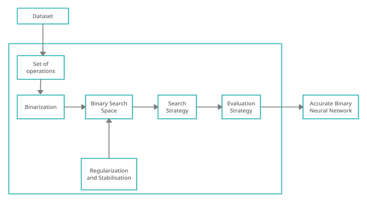
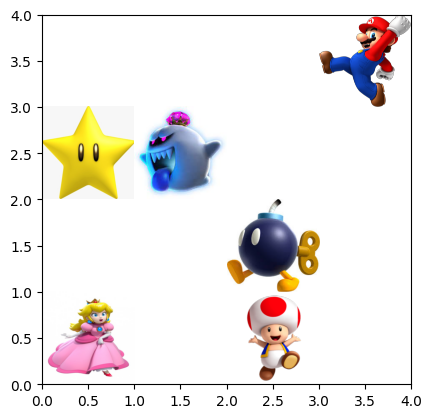

Rohan Venkatesh Sirigeri
Tech Enthusiast | Programmer | Analyst
Rohan Venkatesh Sirigeri
Tech Enthusiast | Programmer | Analyst
People find me to be an up-beat and passionate, self-motivated team player. One year of experience as an intern in Computer Vision and Deep Learning domain and a year of Data Science masters has equipped me with the skills to excel in any industry. As a budding problem-solver, I am always on the lookout for solving real-world problems.
Work Experience
-
EITACIES.INC
June 2023 - August 2023ML Engineer Intern
- Understanding business objectives and developing models that help to achieve them, along with metrics to track their progress.
- Analyzing the ML algorithms that could be used to solve a given problem and ranking them by their success probability.
- Exploring and visualizing data to gain an understanding of it, then identifying differences in data distribution that could affect performance when deploying the model in the real world.
- Defining preprocessing or feature engineering and validation strategies to be done on a given dataset.
- Training models and tuning their hyperparameters.
- Analyzing the errors of the model and designing strategies to overcome them and deploy models to production.
-
Cognizant Technology Solutions
January 2022 - July 2022Intern for Full Stack Development
- Learned about how a problem is addressed and working as a team to find an efficient solution.
- Learned the approach used by the company to solve a problem that is Agile Methodology.
- Worked on Full Stack Development Language like Java, HTML, CSS.
- Worked on Tools like React, Node JS.
- Learned some of the behavioral aspects of the job like Communication, Time Management, etc.
-
Samsung Research Institute, Bangalore
January 2021 - January 2022Project Intern
- Developed a new method in Binary Neural Architecture Search methods which surpassed State-Of-The-Art model called BNAS.
- The accuracy metric difference was 3% better than the State-Of-The-Art model.
- Developed a Application to recognize objects using LARQ Compute Engine.
- The application was developed on the model acquired from Binary Neural Architecture Search.
- In 2021, our project received the prestigious Certificate of Excellence award from Samsung, distinguishing it as one of the top eight projects selected.
Education
-
Master's in Data Science
2022-PresentMasters at State University of New York at Buffalo.
Specializing in Data Mining, Data Science techniques, Machine Learning, Deep Learning and Computer Vision. Current GPA is 3.38 -
Bachelor's in Computer Science and Engineering
2018-2022Graduated with a GPA of 3.8
Noteworthy Personal Projects
-
Spotting the Golden Grains - Innovative Wheat Detection Technique
While harvesting a big land of wheat grains, it generally takes a lot of time and man power. To automate the process, This wheat detection technique can be used to integrate in the robots so that there would be decrease in time and cost.
-
House Prices Prediction
Imagine being a student in a new place. It can get so confusing if you need to find a rental house. My solution will use specific parameters which are relevant to students like bus stops, class routes, eateries, hang out places, and predicts specific locations which make house hunting easy.
-
Mental Health Prediction in Tech Employees

Assessing the historical health records of Tech Community personnel and forecasting the mental well-being of incoming employees, accomplished through the utilization of the Python Language.
-
Performance Comparison of Neural Architecture Search on Convolutional Neural Networks on Non-Standard Dataset
Analysis of the performance of Neural Architectural Search methods (Reinforcement Learning, Gradient based Optimization and Evolutionary Algorithm) based on model size, accuracy, etc. parameters. The research paper is being Presented in the ICVGIP conference in IIT Jodhpur.
-
Deploy Binary Neural Network Using LARQ Compute Engine
Deploying optimal Binary Neural Network from a set of Binary Neural Networks using NAS which takes less memory to use it for embedded systems. This project is being done in collaboration with Samsung Research Institute, Bangalore.
-
Design optimized Binary Neural Network using NAS
Finding optimal Binary Neural Network from a set of Binary Neural Networks using NAS which takes less memory to use it for embedded systems. This project is being done in collaboration with Samsung Research Institute, Bangalore.
-
Time Series of Cryptocurrency with R
In this project, we examined fundamental methodologies for the visualization of cryptocurrency data, the computation of moving averages for trend analysis, and the derivation of returns from Bitcoin data. These tasks were accomplished using the R Language.
-
Defining and Solving Reinforcement Learning Environment
Leveraging comprehension of Reinforcement Learning and the optimal procedure for the agent's attainment of objectives, an interactive grid world was established. This grid world was designed around the Super Mario game concept, wherein the agent embodies Mario, and the ultimate objective involves reaching the princess. The development process was undertaken employing Python and machine learning methodologies.
-
Organize for Life
The persistent challenge in medicine lies in timely donor matching. To address this, a database was devised enabling doctors to specify requirements such as blood and organ types, facilitating efficient organ selection for life-saving.
-
Secondary Insurance Prediction
Finding the company"’"s benefit of providing Secondary Insurance to the customers by analyzing the inputs given from the current customers and predicting the response of upcoming customers.